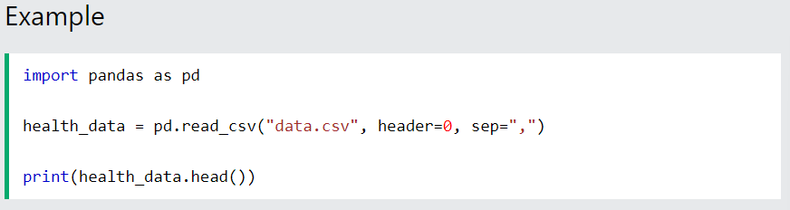

Before analyzing data, a Data Scientist must extract the data, and make it clean and valuable.
Before data can be analyzed, it must be imported/extracted.
In the example below, we show you how to import data using Pandas in Python.
We use the read_csv() function to import a CSV file with the health data:
Tip: If you have a large CSV file, you can use the head() function to only show the top 5rows:
Look at the imported data. As you can see, the data are "dirty" with wrongly or unregistered values:
So, we must clean the data in order to perform the analysis.
We see that the non-numeric values (9 000 and AF) are in the same rows with missing values.
Solution: We can remove the rows with missing observations to fix this problem.
When we load a data set using Pandas, all blank cells are automatically converted into "NaN" values.
So, removing the NaN cells gives us a clean data set that can be analyzed.
We can use the dropna() function to remove the NaNs. axis=0 means that we want to remove all rows that have a NaN value:
The result is a data set without NaN rows:
To analyze data, we also need to know the types of data we are dealing with.
Data can be split into three main categories:
Numerical - Contains numerical values. Can be divided into two categories:
Categorical - Contains values that cannot be measured up against each other. Example: A color or a type of training
Ordinal - Contains categorical data that can be measured up against each other. Example: School grades where A is better than B and so on
By knowing the type of your data, you will be able to know what technique to use when analyzing them.
We can use the info() function to list the data types within our data set:
Result:
We see that this data set has two different types of data:
We cannot use objects to calculate and perform analysis here. We must convert the type object to float64 (float64 is a number with a decimal in Python).
We can use the astype() function to convert the data into float64.
The following example converts "Average_Pulse" and "Max_Pulse" into data type float64 (the other variables are already of data type float64):
Now, the data set has only float64 data types.
When we have cleaned the data set, we can start analyzing the data.
We can use the describe() function in Python to summarize data:
Result:
Count - Counts the number of observations
Mean - The average value
Std - Standard deviation (explained in the statistics chapter)
Min - The lowest value
25%,50% and 75% are percentiles (explained in the statistics chapter)
Max - The highest value